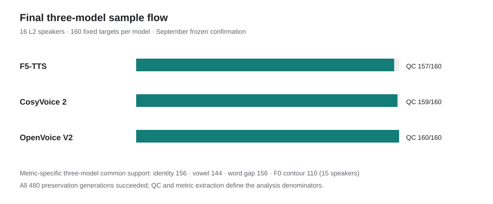
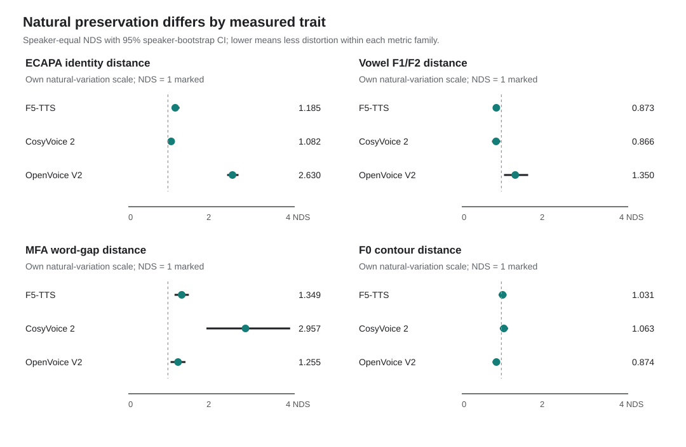
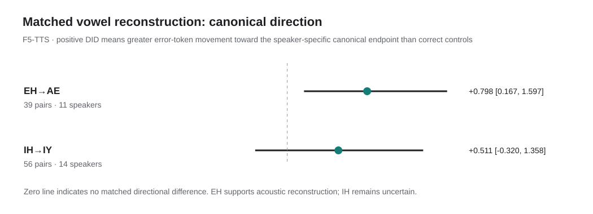
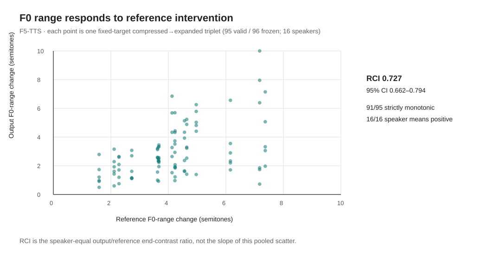
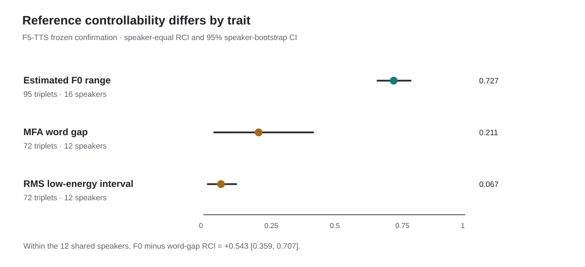
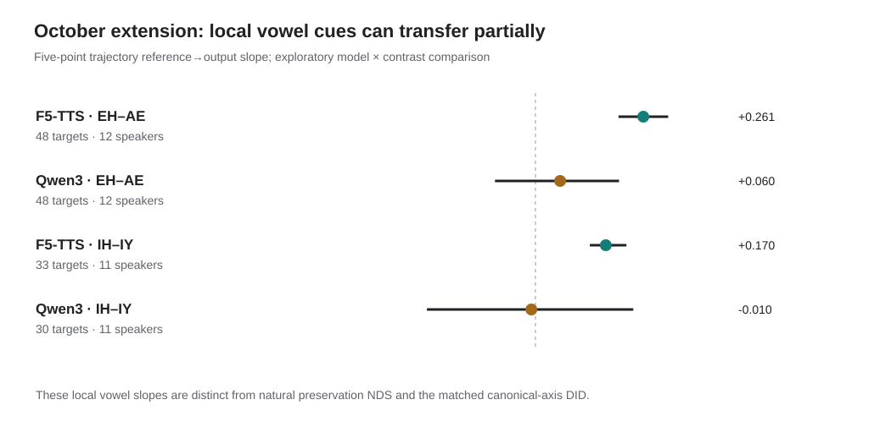
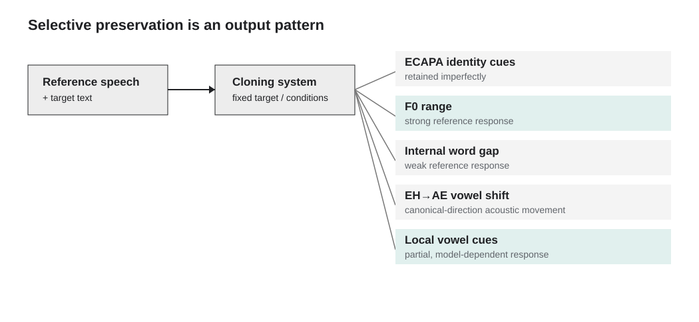

L2 English Speech Traits in Zero-Shot Voice Cloning: Preservation and Reconstruction
Experimental Progress Update
From the research question to a frozen confirmatory experiment and targeted October follow-ups.
Where we were last time
We asked whether a zero-shot clone carries a second-language speaker's own speech traits into new English text.
Then
The research question was taking shape. We had little systematic output evidence.
Now
Frozen three-model measurements, matched vowel controls, reference interventions, and independent follow-up tests.
This time: experimental evidence and the boundaries of what it supports.
What does a cloning system carry over?
A reference speaker provides more than one kind of information: voice cues, F0 behavior, local timing, and L2 pronunciation.
Preservation
How close is the generated speech to the speaker's own speech, relative to natural variation?
Reconstruction
Does a non-canonical vowel realization move acoustically toward a canonical endpoint under matched controls?
Controllability
When we change one reference cue, how much does the output change for the same target?
These are different estimands: NDS, matched DID, and RCI. They cannot be collapsed into one score.
From L2 reference speech to a controlled test
Measurement roles
Whisper checks generated text; MFA supplies word/phone alignment; ECAPA provides an independent speaker-verification proxy; F1/F2 and F0 estimate vowel and pitch behavior. F5 inference uses Vocos.
Inference unit
Targets are paired within speakers. The main uncertainty intervals resample speakers, not individual output rows as independent people.
The main frozen experiment was completed 24 September 2026. October studies are separate extensions, with their own support and limits.
Three models, shared targets, different valid support

The earlier 8-speaker benchmark had only 36/80 three-model common pairs. The final design expanded to 16 speakers and 160 targets per model; the old paired counts are feasibility history, not the current denominator.
Source: final gate · sample QC.
One speaker, several output profiles

ECAPA identity distance, vowel F1/F2, MFA word gaps, and F0 contours do not move together as a single fidelity measure. The nine speaker-level identity–behavior correlations have intervals crossing zero, so the embedding proxy does not stably predict these behavioral distortions at this sample size.
NDS uses different distance functions across families. CosyVoice's word-gap magnitude is sensitive to MAD versus SD scaling; do not read this chart as an overall model ranking.
Source: frozen preservation NDS.
EH→AE shows acoustic movement toward canonical EH

EH→AE DID, 95% CI [0.167, 1.597]; 39 complete pairs / 50 frozen, 11 speakers.
IH→IY DID, 95% CI [−0.320, 1.358]; 56/106 pairs, 14 speakers. The direction is uncertain.
Other tested directions also set limits: IY→IH and post-vocalic rhoticity intervals cross zero. The supported claim is contrast-specific acoustic reconstruction, not universal accent normalization or listener-confirmed phoneme correction.
Source: frozen matched DID.
Does the acoustic movement have any audible counterpart?
Among 14 items with positive acoustic movement, both experts heard a closer EH realization on 9. This is limited, informed validation of selected items; it does not establish a population correction rate or blind phoneme identification.
An October blind listening study has prepared and QC-checked 2×2 materials, but has no real listener responses yet. It contributes no perceptual effect estimate.
Source: expert result · later materials-only report.
Why correlation was not enough
A reference–clone correlation may reflect speaker, sentence content, target text, or the model's regular output pattern. It does not isolate response to a reference cue.
Reference Controllability Index (RCI)
For each fixed target, compare output expanded minus compressed with the corresponding reference change; aggregate within speakers and then weight speakers equally. RCI describes response to an imposed cue, not natural copying or a proven internal control channel.
The timing test held total reference frames equal. Earlier duration-changing pause pilots affected F5's generation-frame budget and are superseded for the timing conclusion.
Changing reference F0 range changes the clone

F5 F0-range RCI = 0.727 [0.662, 0.794].
The 95 complete triplets cover 16 speakers; 91/95 outputs are strictly monotonic across the three conditions, and all 16 speaker means respond positively. The reference end contrast median is 4.127 semitones and output median is 2.532 semitones. This supports strong range controllability under this intervention; it does not mean the full F0 contour is copied.
Source: frozen RCI · 95 target triplets.
Internal timing responds much less

All 72 timing target triplets were complete across 12 eligible speakers. The reference local-pause end contrast median was 0.270 seconds; 56/72 frozen RMS-detected low-energy end contrasts were exactly zero and only 4/72 MFA local gaps were strictly monotonic.
“Acoustic pause” here is the frozen RMS detector's low-energy interval overlapping an MFA gap, not a manually verified linguistic pause. Later threshold remeasurement finds larger responses under some definitions; the numeric zero count is detector-sensitive. Sentence duration and initial silence are not substitutes for the internal gap result.
Source: frozen RCI · 72 triplets · October measurement re-audit.
The four headline estimates
| Trait / question | Metric | Result [95% CI] | Support | Readout |
|---|---|---|---|---|
| Reference F0 range | RCI | 0.727 [0.662, 0.794] | 95 triplets / 16 speakers | Strong range response |
| MFA local word gap | RCI | 0.211 [0.039, 0.422] | 72 / 12 | Weak, heterogeneous response |
| RMS low-energy interval | RCI | 0.067 [0.014, 0.128] | 72 / 12 | Very small detector-specific response |
| EH→AE canonical direction | Matched DID | +0.798 [0.167, 1.597] | 39 pairs / 11 | Acoustic reconstruction |
Reference cues are selectively transferred; a speaker is not reproduced uniformly across measured traits.
The final IH→IY DID is +0.511 [−0.320, 1.358], 56 pairs / 14 speakers. Keeping this uncertain result visible prevents over-generalizing EH.
Download: confirmatory_results.csv · full machine-readable summary.
What the follow-ups add

External model check
Qwen3-TTS F0-range RCI is 0.684 [0.581, 0.788] with audio+text and 0.776 [0.652, 0.909] with speaker vector only (96 targets / 16 speakers each). Local-gap RCI is 0.088 [−0.138, 0.383] and 0.139 [0.014, 0.283] (71 and 72 targets / 12 speakers).
Local vowel control
F5 shows partial EH and IH acoustic reference response (slopes 0.261 and 0.170); Qwen's EH and IH estimates are 0.060 and −0.010 with intervals spanning zero. The 11-speaker average F5−Qwen difference is 0.158 [0.004, 0.353], exploratory and imprecise.
The 22 October five-point reanalysis is consistent with EH canonical-direction movement (+0.898 [0.450, 1.503], 35 pairs / 11 speakers), but does not replace the frozen midpoint DID or establish dynamic shape change. Blind 2×2 listening materials are ready; listener responses are still absent.
Sources: Qwen F0 · Qwen timing · local-vowel factorial · dynamic reanalysis.
Voice cloning selectively preserves measured L2 speech traits.

The strongest comparison is active reference control: F0 changes reliably, while equal-frame local timing changes much less. Matched EH tokens also shift acoustically toward the canonical endpoint, yet local vowel manipulations show that some segmental cues can transfer partially. A competition between reference evidence, target text, and model prior is a plausible explanation, not a measured internal mechanism.
What we can and cannot claim
Current evidence supports
- Different measured traits have different natural preservation profiles.
- F5 F0-range reference controllability is strong in the tested design.
- Equal-frame local timing response is weaker and heterogeneous.
- F5 EH→AE shows matched canonical-direction acoustic movement.
- October extensions suggest model-dependent local-vowel transfer and repeat the F0/timing contrast in Qwen.
Not established
- Uniform behavior across all L2 accents, phonemes, or TTS architectures.
- Listener-confirmed categorical correction, human identity recognition, or spontaneous-conversation generalization.
- A pure mechanism inside the model or separate internal channels.
- Absence of timing response under every detector or design.
- A single “best” model across unlike acoustic dimensions.
Full-size results and the distinction between confirmatory and exploratory evidence are in the downloadable experiment summary.
Questions for Supervisor
Report package: provenance and regeneration.